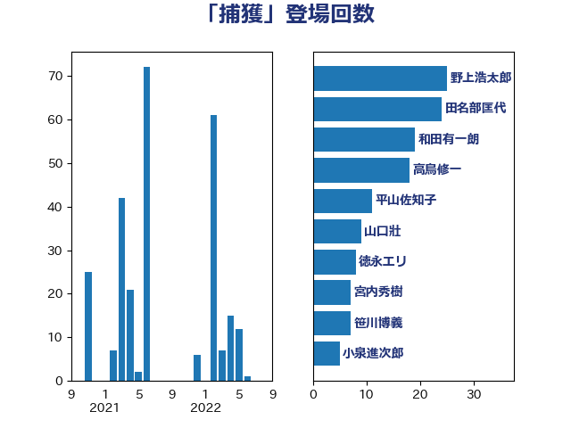

単語「捕獲」

| 野上浩太郎 | 自由民主党 | 25 回 |
| 田名部匡代 | 立憲民主党 | 24 回 |
| 和田有一朗 | 日本維新の会 | 19 回 |
| 高鳥修一 | 自由民主党 | 18 回 |
| 平山佐知子 | 無所属 | 11 回 |
| 山口壯 | 自由民主党 | 9 回 |
| 徳永エリ | 立憲民主党 | 8 回 |
| 宮内秀樹 | 自由民主党 | 7 回 |
| 笹川博義 | 自由民主党 | 7 回 |
| 小泉進次郎 | 自由民主党 | 5 回 |
| 青山大人 | 立憲民主党 | 5 回 |
| 森田俊和 | 立憲民主党 | 4 回 |
| 中村裕之 | 自由民主党 | 3 回 |
| 岡本あき子 | 立憲民主党 | 3 回 |
| 遠藤良太 | 日本維新の会 | 3 回 |
| 上月良祐 | 自由民主党 | 2 回 |
| 上田英俊 | 自由民主党 | 2 回 |
| 宮崎雅夫 | 自由民主党 | 2 回 |
| 寺田静 | 無所属 | 2 回 |
| 武部新 | 自由民主党 | 2 回 |
| 片山大介 | 日本維新の会 | 2 回 |
| 西田実仁 | 公明党 | 2 回 |
| 中川宏昌 | 公明党 | 1 回 |
| 中川郁子 | 自由民主党 | 1 回 |
| 串田誠一 | 日本維新の会 | 1 回 |
| 小島敏文 | 自由民主党 | 1 回 |
| 山下芳生 | 日本共産党 | 1 回 |
| 岸信夫 | 自由民主党 | 1 回 |
| 後藤祐一 | 立憲民主党 | 1 回 |
| 松木けんこう | 立憲民主党 | 1 回 |
| 比嘉奈津美 | 自由民主党 | 1 回 |
| 源馬謙太郎 | 立憲民主党 | 1 回 |
| 田畑裕明 | 自由民主党 | 1 回 |
| 石川香織 | 立憲民主党 | 1 回 |
| 谷合正明 | 公明党 | 1 回 |